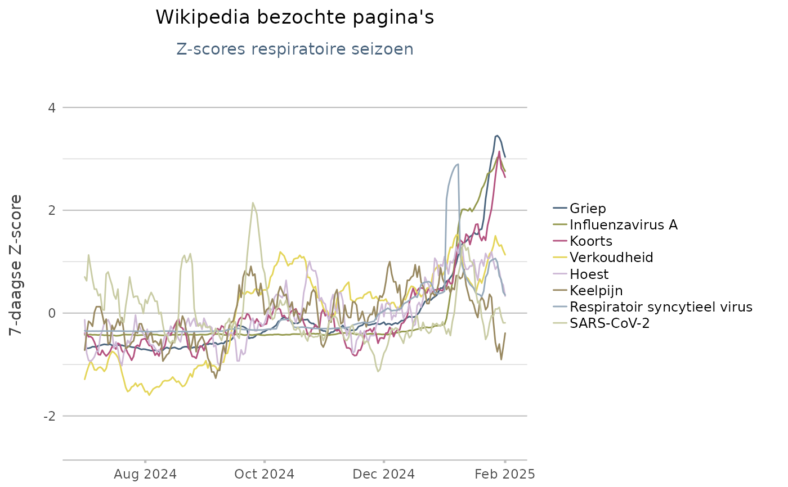
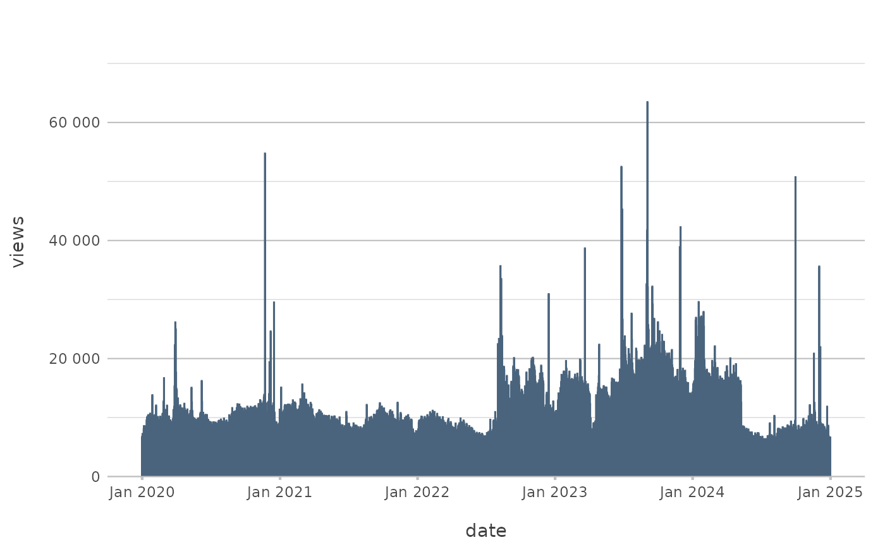

Download Wikipedia daily page views for any language, using the Wikimedia REST API.
wikipedia_pageviews(
articles,
date_range = last_6_months(),
language = "nl",
platform = c("all-access", "mobile-web", "mobile-app", "desktop"),
agent = c("all-agents", "user", "spider", "automated")
)Wikipedia article title(s)
defaults to last_6_months()
defaults to "nl" for the Dutch Wikipedia
defaults to "all-access". More reliable for epidemic trends might be "mobile-web".
defaults to "all-agents"
wikipedia_pageviews("Griep")
#> # A tibble: 212 × 3
#> article date views
#> <chr> <date> <int>
#> 1 Griep 2024-12-01 98
#> 2 Griep 2024-12-02 83
#> 3 Griep 2024-12-03 91
#> 4 Griep 2024-12-04 98
#> 5 Griep 2024-12-05 83
#> 6 Griep 2024-12-06 77
#> 7 Griep 2024-12-07 75
#> 8 Griep 2024-12-08 87
#> 9 Griep 2024-12-09 105
#> 10 Griep 2024-12-10 112
#> # ℹ 202 more rows
articles <- c("Griep", "Koorts", "Hoest", "Verkoudheid", "Influenzavirus A",
"Respiratoir syncytieel virus", "Keelpijn", "SARS-CoV-2")
if (require("certeplot2") && require("certestats") && require("dplyr")) {
articles |>
wikipedia_pageviews(c("2024-07-01", "2025-02-01")) |>
group_by(article) |>
mutate(z = z_score(views),
z_ma = moving_average(z, w = 7, side = "left")) |>
plot2(
x = date,
y = z_ma,
category = article,
type = "line",
category.sort = "freq-asc",
legend.position = "right",
y.title = "7-daagse Z-score",
x.title = "",
title = "Wikipedia bezochte pagina's",
subtitle = "Z-scores respiratoire seizoen")
}
#> Loading required package: certeplot2
#> Loading required package: plot2
#>
#> Attaching package: ‘plot2’
#> The following objects are masked from ‘package:certetoolbox’:
#>
#> big_mark, dec_mark
#> Loading required package: certestats
#>
#> Attaching package: ‘certestats’
#> The following objects are masked from ‘package:stats’:
#>
#> IQR, fivenum, median, quantile, sd, var
#> The following objects are masked from ‘package:base’:
#>
#> all, any, max, mean, min, pmax, pmin, prod, range, sum
#> ℹ Applying category.sort = "freq-asc" using summarise_function = sum
#> ℹ Using x.date_breaks = "2 months" based on data
#> ℹ Using x.date_labels = "mmm yyyy" based on data

if (require("certeplot2")) {
wikipedia_pageviews("Dog",
language = "en",
date_range = last_5_years()) |>
plot2(x = date, y = views)
}
#> ℹ Using x.date_breaks = "1 year" based on data
#> ℹ Using x.date_labels = "mmm yyyy" based on data
#> ! Omitting printing of 1827 datalabels - use datalabels = TRUE to force
#> printing
